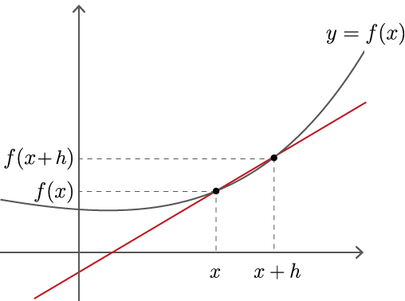

Step 4: Numerical Differentiation¶
The code implemented in the previous step
[1]:
import numpy as np
class Variable:
def __init__(self, data):
self.data = data
class Function:
def __call__(self, input):
x = input.data
y = self.forward(x)
output = Variable(y)
return output
def forward(self, x):
raise NotImplementedError()
class Square(Function):
def forward(self, x):
return x ** 2
class Exp(Function):
def forward(self, x):
return np.exp(x)
We have implemented the Variable and Function classes in the previous step. In fact, the reason why we bothered to implement such a class is to get the derivative automatically. In this section, we will first review derivative and then try to compute derivative in a simple way called numerical differentiation. The next step is to implement a more efficient alternative to numerical differentiation – backpropagation – which is a more efficient algorithm.
NOTE
Derivatives are important in many areas, not just machine learning. Derivatives are needed in many fields, such as fluid mechanics, financial engineering, meteorological simulation and engineering design optimization. And in various such fields, the ability to automatically compute derivatives is actually used.
4.1 Derivative¶
What is a derivative? A derivative is, simply put, a “rate of change”. For example, the rate of change in the position of an object with respect to time - the derivative of the position - is the velocity. Also, the rate of change in velocity with respect to time - the derivative of velocity - corresponds to acceleration. As you can see, the derivative represents the rate of change. And it is defined as the amount of change in an “extremely small amount of time”. In mathematical terms, given the function \(f(x)\), the derivative at \(x\) is defined by the following expression
The \(\displaystyle\lim_{h \to 0}\) in equation (4.1) represents the limit, which means to make \(h\) as close as possible to \(0\). Here, \(\frac{f(x + h) - f(x)}{h}\) in equation (4.1) is the slope of a straight line passing through two points, as shown in Figure 4-1.

Figure 4-1 A line through the curve \(y=f(x)\) and its two points
As shown in Figure 4-1, the fraction of change in the function \(f(x)\) at two points in \(x\) and \(x+h\) is \(\frac{f(x+h) - f(x)}{h}\). Now, by making the width of \(h\) as close as possible to zero, we can find the rate of change in \(x\). This is the derivative of \(y=f(x)\). Also, if \(y=f(x)\) is a differentiable interval, then Eq. (4.1) holds for “any \(x\)” in that interval. Therefore, \(f'(x)\) in Eq. (4.1) is also a function, and it is called a derivative of \(f(x)\).
As shown in Figure 4-1, the fraction of change in the function \(f(x)\) at two points in \(x\) and \(x+h\) is \(frac\frac{f(x+h) - f(x)}{h}\). Now, by making the width of \(h\) as close as possible to zero, we can find the rate of change in \(x\). This is the derivative of \(y=f(x)\). Also, if \(y=f(x)\) is a differentiable interval, then Eq. (4.1) holds for “any \(x\)” in that interval. Therefore, \(f'(x)\) in Eq. (4.1) is also a function.
4.2 Implementation of Numerical Differentiation¶
Let’s implement the derivative according to the expression (4.1), which is the definition of the derivative. The caveat here is that computers can’t handle extremes. So, we’ll represent \(h\) as an approximation. For example, we compute equation (4.1) using a small value such as \(h = 0.0001\) (= 1e-4). The method to find the amount of change in a function using such small differences is called numerical differentiation.
The numerical derivative approximates the “true derivative” by using a tiny value \(h\). As a result, the value is subject to error. There is a technique called “central difference approximation” to reduce the approximation error. In the central difference approximation, instead of finding the difference between \(f(x)\) and \(f(x+h)\), we find the difference between \(f(x-h)\) and \(f(x+h)\). As shown in the figure, it looks like the blue line in Figure 4-2.
Figure 4-2 Comparison of “true derivative”, “forward difference approximation” and “central difference approximation”
As shown in Figure 4-2, the method of finding the slope at two points, \(x\) and \(x+h\), is called the “forward difference approximation”. The case of \(x-h\) and \(x+h\) is called the “central difference approximation”, and it is known that the error is less in this case. We won’t prove it here, but intuitively it can be seen from the slope of the straight line in Figure 4-2. Note that the slope of the line in the central difference approximation is \(\frac{f(x+h) - f(x-h)}{2h}\) (note that the denominator is \(2h\)).
NOTE
It can be proved by the Taylor expansion that the central difference approximation is closer to the true derivative than the forward difference approximation. For proof of this, see literature [1].
Let’s implement the function numerical_diff(f, x, eps=1e-4) to compute a numerical derivative using the central difference approximation. The argument f gives a Function instance of the function to be differentiated. The argument x gives the variable for the differentiation in a Variable instance. The default value is 1e-4 (=``0.0001``), where eps is a small value. Then, the numerical derivative can be implemented as follows.
[2]:
def numerical_diff(f, x, eps=1e-4):
x0 = Variable(x.data - eps)
x1 = Variable(x.data + eps)
y0 = f(x0)
y1 = f(x1)
return (y1.data - y0.data) / (2 * eps)
If we note above that the instance variable data of Variable contains the actual data, there is nothing else to be concerned about. Now, let’s actually compute the derivative for the Square class that we implemented in step 3.
[3]:
f = Square()
x = Variable(np.array(2.0))
dy = numerical_diff(f, x)
print(dy)
4.000000000004
As the results above show, the derivative of \(y=x^2\) in \(x=2.0\) is \(4.000000000004\). The exact value of the derivative without error is \(4.0\), so the result of this run is approximately correct.
WARNING
Calculations of the derivatives can also be solved analytically. To solve analytically is to derive an answer only by a variation of a formula. In the above example, the formula for the derivative gives \(\frac{dy}{dx} = 2x\) for \(y=x^2\) (\(\frac{dy}{dx}\) is the symbol for the derivative of \(y\) with respect to \(x\)). Therefore, the derivative in \(x=2.0\) is \(4.0\). This value of \(4.0\) is the exact value that does not include errors. The result of the numerical derivative above isn’t exactly \(4.0\), but you can see that the error is quite small.
4.3 Derivatives of composite functions¶
So far we have dealt with a simple function \(y=x^2\). Next, let’s find the derivative of the composite function. Here, for \(y = (e^{x^2})^2\), we find the derivative \(\frac{dy}{dx}\). The code looks like this.
[4]:
def f(x):
A = Square()
B = Exp()
C = Square()
return C(B(A(x)))
x = Variable(np.array(0.5))
dy = numerical_diff(f, x)
print(dy)
3.2974426293330694
In the above code, we have a series of calculations in a function called f. Since functions are also objects in Python, we can pass a function as an object to the arguments of other functions. In the above example, we actually pass the function f to the numerical_diff function.
Looking at the result above, the derivative is 3.297... The derivative is now3.297… This means that if we change x from 0.5 to only a small value, the value of y will change by 3.297... times that small value. This means that if you change only a small value from 0.5, then the value of y will change only by 3.297... times that small value.
Now we have succeeded in finding the derivative “automatically”. Once the desired calculation was expressed in code (in the example above, we defined the function f), the derivative was computed automatically by the program. If we follow this method, we can find the derivative automatically, no matter how complex the functions are combined! All that’s left to do is to increase the number of functions, and you can get the value of the derivative of any calculation–if it’s a differentiable
function. Unfortunately, however, there is a problem with numerical differentiation.
4.4 Problems with Numerical Differentiation¶
The results of the numerical differentiation are subject to error. In many cases, the error is very small, but some calculations may include large errors.
NOTE
The main reason why errors tend to be included in the results of numerical differentiation is due to “cancellation of significant digits”. In the calculation for “difference”, such as the center-difference approximation, the difference is taken from numbers of the same magnitude, but the number of effective digits decreases in the result of the calculation due to cancellation of significant digits. For example, let’s consider the calculation of \(1.234 - 1.233\) when the number of valid digits is 4 - subtraction of close values. The result will be \(0.001\) and the number of valid digits will be one. By the same principle, the calculation of the difference in the numerical derivative will cause the digits to fall off, so the error is more likely to be included.
A more serious problem with numerical differentiation is that it is computationally expensive. More specifically, if you want to find the derivative for multiple variables, you need to find the derivative for each variable. In neural networks, there are cases where the derivative is obtained for more than several million variables (parameters), and it is impractical to obtain the derivative of that number using a numerical differention. In its place is back-propagation. From the next step, we finally move on to back-propagation.
Note that the numerical derivative is easy to implement and gives the approximate correct value. Back-propagation, on the other hand, is a complex algorithm, and its implementation is easily riddled with bugs. So, to check the correctness of the back-propagation implementation, we will use the results of the numerical differentiation. This is called gradient check, which is a method of comparing the results of a numerical differentiation with the results of a back-propagation. The gradient check is implemented in “Step 10”.